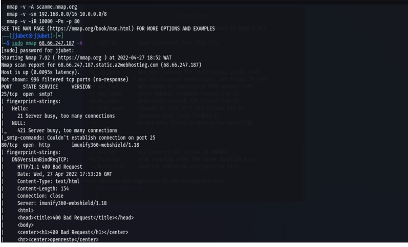
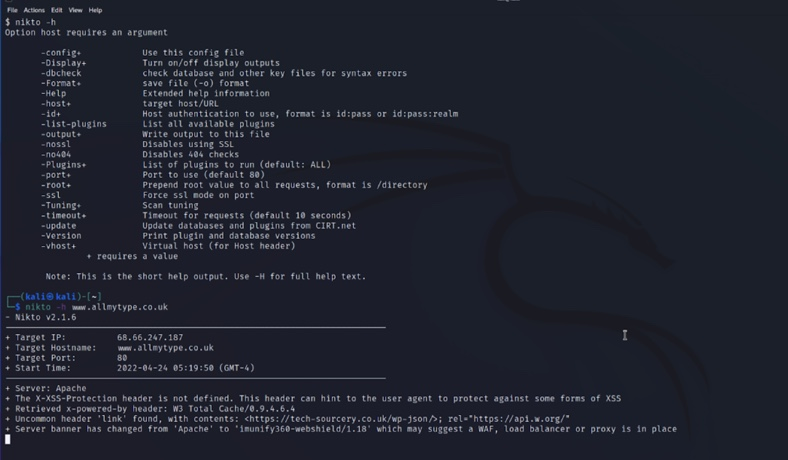
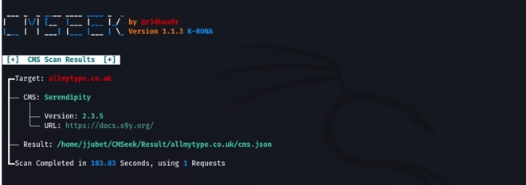
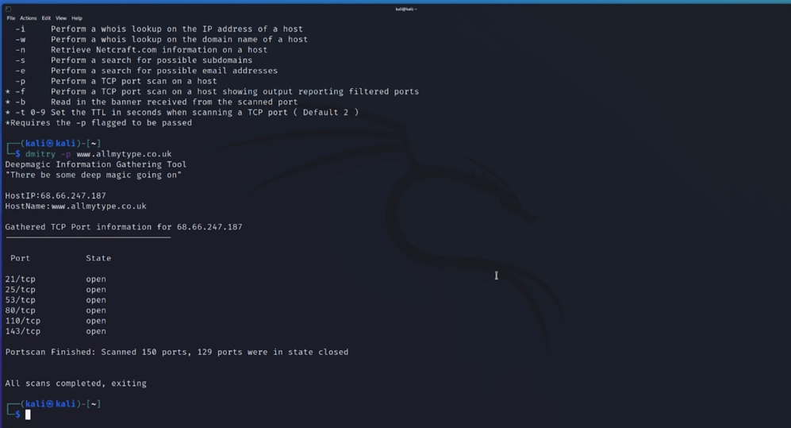
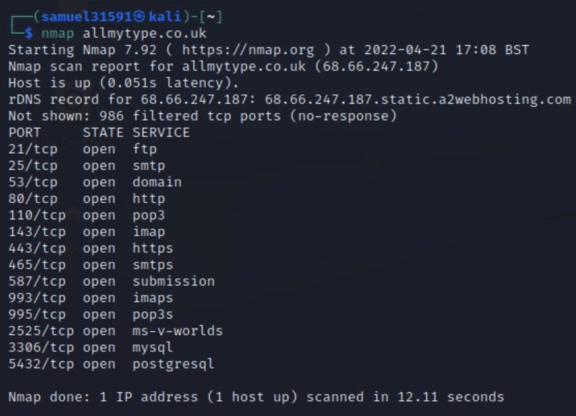

Scanning Activity 2
Task
For this scanning acitivy we had to perform scans of our assigned website (allmytype.co.uk) using tools available through Kali Linux to answer as many of the following questions as we could:
What Operating System does the web site utilise?
What web server software is it running?
Is it running a CMS (Wordpress, Drupal, etc?)
What protection does it have (CDN, Proxy, Firewall?)
Where is it hosted?
Does it have any open ports?
Does the site have any known vulnerabilities?
What versions of software is it using? Are these patched so that they are up to date?
Approach
For this exercise we decided as a group to each have a go at the scanning acitivy and then discuss and agree the results in our following meeting, this was the same approach we had taken previously and it worked to ensure each member had a go at the activity.
Results
What Operating System does the web site utilise?
Using Nmap Jurbe found the site was using Linux - this was one of the scans I struggled to get to work

What web server software is it running?
Using Nkito I found that the site was running on an Apache server

Is it running a CMS (Wordpress, Drupal, etc?)
CMSeek showed the CMS is Serendipity version 2.3.5

What protection does it have (CDN, Proxy, Firewall?)
My Nikto scan showed; Server banner has changed from ‘Apache’ to ‘imunify360-webshield/1.18’ which may suggest a WAF, load balancer or proxy
Where is it hosted?
InfoSploit points to a Geo-IP location as United states but points IP-locator as Amsterdam, Netherlands
Does it have any open ports?
Yes - my dmitry scanned 150 ports of which 129 were closed. Open ports included 21, 25, 53, 80, 110, 143

However, using Nmap Samuel identified more information, it showed the following ports open

Does the site have any known vulnerabilities?
Nikto scan showed;
The X-XSS protection header is not defined - cross site scripting vulnerability
X-powered-by header: W3 Total cache/0.9.4.6.4
Uncommon header ‘link’ found with contents https:tech-sourcery.co.uk/wp-json
What versions of software is it using? Are these patched so that they are up to date?
Nmap scan identified Os version as Linux Red hat enterprise 7
According to Red Hat Unveils Red Hat Enterprise Linux 7, Redefining the Enterprise Operating System. This version was released in 2014. Newer version is Red hat 8